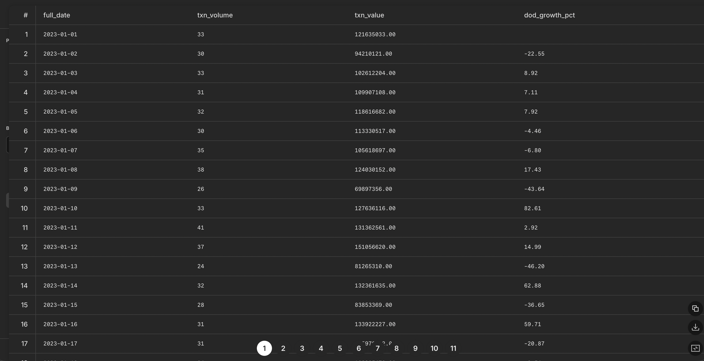
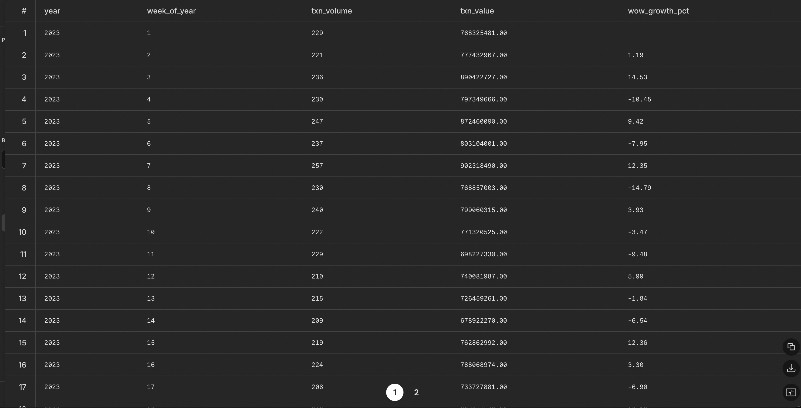
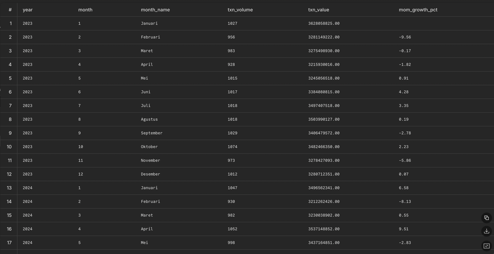
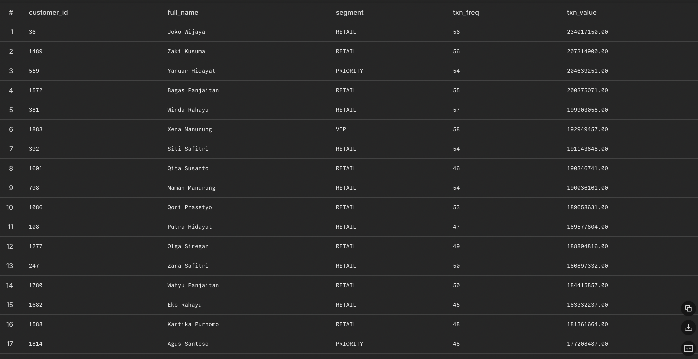
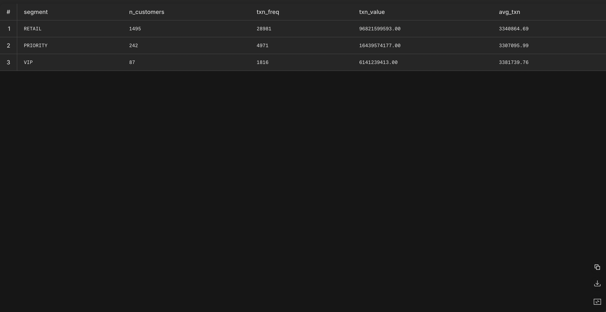
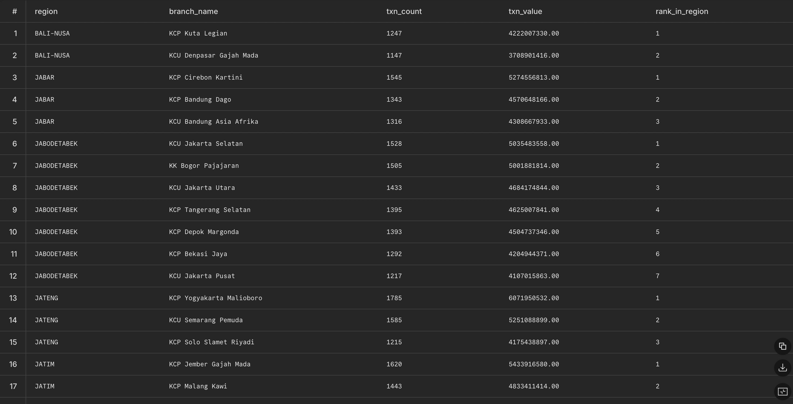
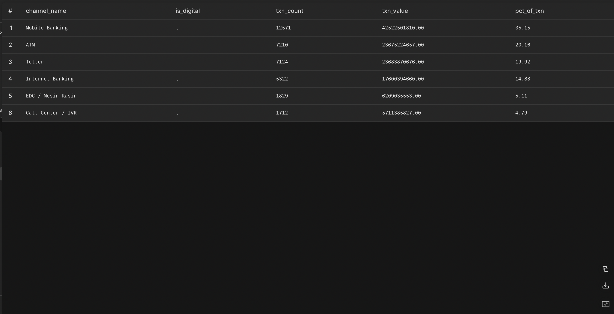
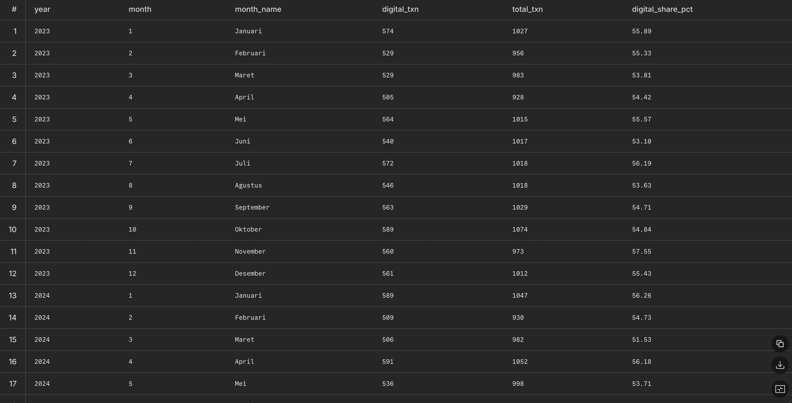
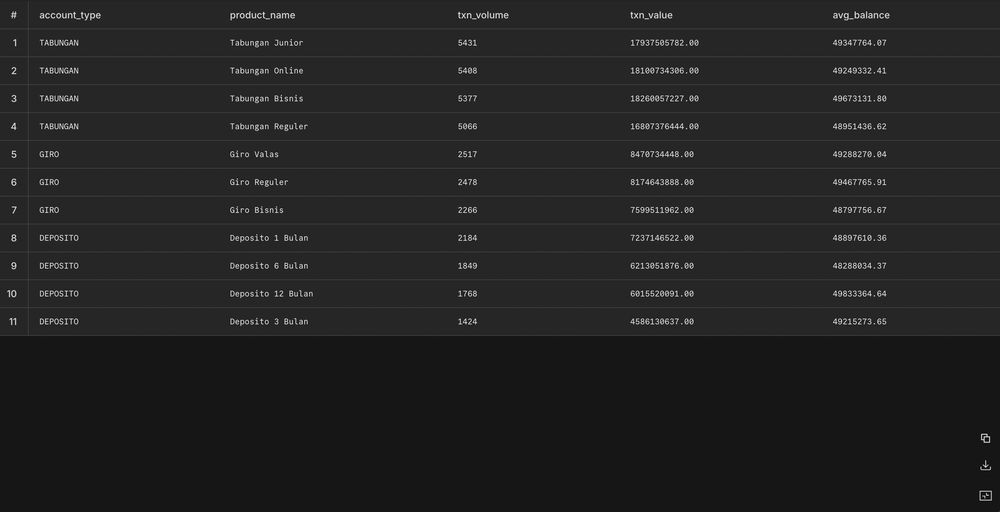
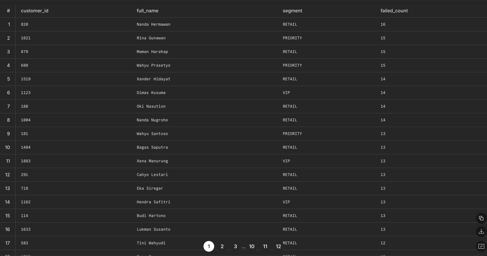

Dokumen ini menjawab 6 dashboard bisnis dengan SQL siap-jalan terhadap star schema
Berapa total volume dan nilai transaksi per hari, minggu, dan bulan? Apa tren pertumbuhannya?
Tabel:
dim_date·dim_channel·fact_transactions
SELECT d.full_date,
COUNT(*) AS txn_volume,
SUM(f.amount) AS txn_value,
ROUND(100.0 * (SUM(f.amount) - LAG(SUM(f.amount)) OVER (ORDER BY d.full_date))
/ NULLIF(LAG(SUM(f.amount)) OVER (ORDER BY d.full_date), 0), 2) AS dod_growth_pct
FROM transactions_sample f
JOIN dim_date_full d ON d.date_id = TO_CHAR(f.transaction_date, 'YYYYMMDD')::INT
WHERE f.status = 'SUCCESS'
GROUP BY d.full_date
ORDER BY d.full_date;
SELECT d.year, d.week_of_year,
COUNT(*) AS txn_volume,
SUM(f.amount) AS txn_value,
ROUND(100.0 * (SUM(f.amount) - LAG(SUM(f.amount)) OVER (ORDER BY d.year, d.week_of_year))
/ NULLIF(LAG(SUM(f.amount)) OVER (ORDER BY d.year, d.week_of_year), 0), 2) AS wow_growth_pct
FROM transactions_sample f
JOIN dim_date_full d ON d.date_id = TO_CHAR(f.transaction_date, 'YYYYMMDD')::INT
WHERE f.status = 'SUCCESS'
GROUP BY d.year, d.week_of_year
ORDER BY d.year, d.week_of_year;
SELECT d.year, d.month, d.month_name,
COUNT(*) AS txn_volume,
SUM(f.amount) AS txn_value,
ROUND(100.0 * (SUM(f.amount) - LAG(SUM(f.amount)) OVER (ORDER BY d.year, d.month))
/ NULLIF(LAG(SUM(f.amount)) OVER (ORDER BY d.year, d.month), 0), 2) AS mom_growth_pct
FROM transactions_sample f
JOIN dim_date_full d ON d.date_id = TO_CHAR(f.transaction_date, 'YYYYMMDD')::INT
WHERE f.status = 'SUCCESS'
GROUP BY d.year, d.month, d.month_name
ORDER BY d.year, d.month;
Siapa nasabah paling aktif berdasarkan frekuensi dan nilai transaksi? Bagaimana distribusi per segmen (Retail/Priority/VIP)?
Tabel:
dim_customer·dim_account·fact_transactions
SELECT cu.customer_id, cu.full_name, cu.segment,
COUNT(*) AS txn_freq,
SUM(f.amount) AS txn_value
FROM transactions_sample f
JOIN dim_customers cu ON cu.customer_id = f.customer_id
WHERE f.status = 'SUCCESS'
GROUP BY cu.customer_id, cu.full_name, cu.segment
ORDER BY txn_value DESC
LIMIT 20;
SELECT cu.segment,
COUNT(DISTINCT cu.customer_id) AS n_customers,
COUNT(*) AS txn_freq,
SUM(f.amount) AS txn_value,
ROUND(AVG(f.amount), 2) AS avg_txn
FROM transactions_sample f
JOIN dim_customers cu ON cu.customer_id = f.customer_id
WHERE f.status = 'SUCCESS'
GROUP BY cu.segment
ORDER BY txn_value DESC;
Cabang mana yang memiliki performa tertinggi berdasarkan jumlah transaksi dan total nilai transaksi per region?
Tabel:
dim_branch·dim_date·fact_transactions
rank_in_region = 1)SELECT b.region, b.branch_name,
COUNT(*) AS txn_count,
SUM(f.amount) AS txn_value,
RANK() OVER (PARTITION BY b.region ORDER BY SUM(f.amount) DESC) AS rank_in_region
FROM transactions_sample f
JOIN dim_branches b ON b.branch_id = f.branch_id
WHERE f.status = 'SUCCESS'
GROUP BY b.region, b.branch_name
ORDER BY b.region, txn_value DESC;
Channel apa yang paling banyak digunakan nasabah (ATM, Mobile, Teller, Internet Banking)? Bagaimana tren migrasi ke digital?
Tabel:
dim_channel·dim_date·fact_transactions
SELECT c.channel_name, c.is_digital,
COUNT(*) AS txn_count,
SUM(f.amount) AS txn_value,
ROUND(100.0 * COUNT(*) / SUM(COUNT(*)) OVER (), 2) AS pct_of_txn
FROM transactions_sample f
JOIN dim_channels c ON c.channel_id = f.channel_id
WHERE f.status = 'SUCCESS'
GROUP BY c.channel_name, c.is_digital
ORDER BY txn_count DESC;
SELECT d.year, d.month, d.month_name,
COUNT(*) FILTER (WHERE c.is_digital) AS digital_txn,
COUNT(*) AS total_txn,
ROUND(100.0 * COUNT(*) FILTER (WHERE c.is_digital) / COUNT(*), 2) AS digital_share_pct
FROM transactions_sample f
JOIN dim_channels c ON c.channel_id = f.channel_id
JOIN dim_date_full d ON d.date_id = TO_CHAR(f.transaction_date, 'YYYYMMDD')::INT
WHERE f.status = 'SUCCESS'
GROUP BY d.year, d.month, d.month_name
ORDER BY d.year, d.month;
Produk rekening mana (Tabungan/Giro/Deposito) yang menghasilkan volume transaksi dan saldo rata-rata tertinggi?
Tabel:
dim_account·dim_date·fact_transactions
balance_after)SELECT a.account_type, a.product_name,
COUNT(*) AS txn_volume,
SUM(f.amount) AS txn_value,
ROUND(AVG(f.balance_after), 2) AS avg_balance
FROM transactions_sample f
JOIN dim_accounts a ON a.account_id = f.account_id
WHERE f.status = 'SUCCESS'
GROUP BY a.account_type, a.product_name
ORDER BY txn_volume DESC;
Adakah transaksi anomali (nilai sangat besar, frekuensi tidak wajar, atau status FAILED berulang) yang perlu diwaspadai?
Tabel:
dim_customer·dim_channel·fact_transactions(+fraud_labels_sample)
SELECT cu.customer_id, cu.full_name, cu.segment,
COUNT(*) AS failed_count
FROM transactions_sample f
JOIN dim_customers cu ON cu.customer_id = f.customer_id
WHERE f.status = 'FAILED'
GROUP BY cu.customer_id, cu.full_name, cu.segment
HAVING COUNT(*) >= 3
ORDER BY failed_count DESC;